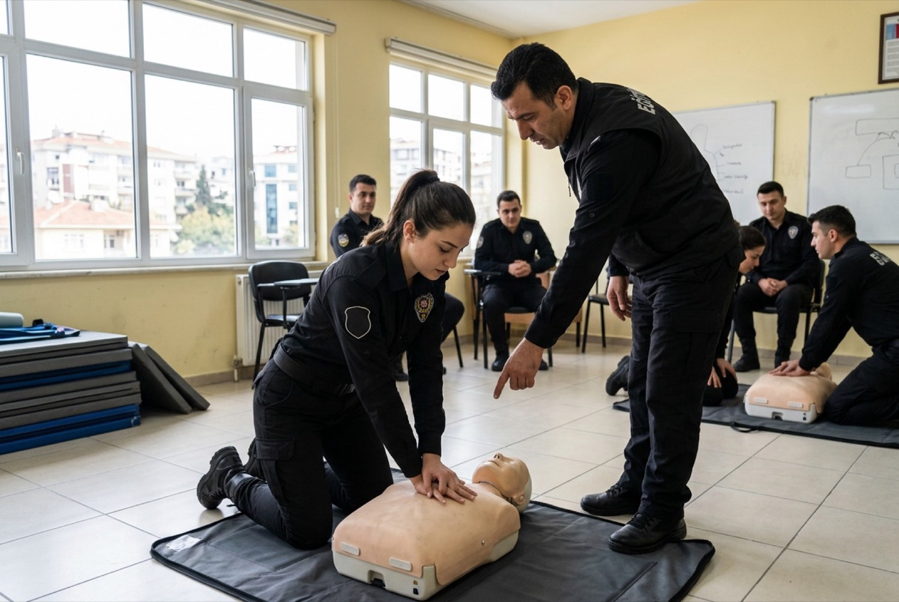
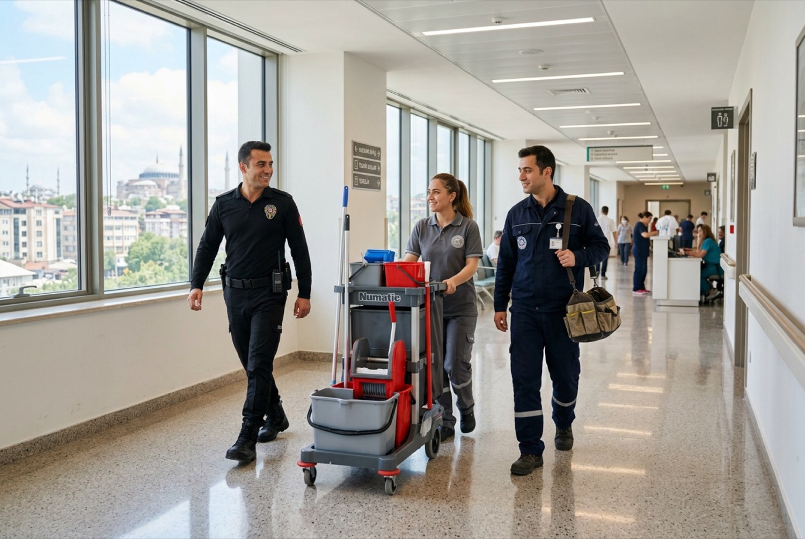

- Ana sayfa
- Kurumsal
2012’den beri sahada
RESS Koruma ve Özel Güvenlik, Esenyurt’taki genel müdürlüğü ve 8 bölge müdürlüğüyle Ress Group’un güvenlik kuruluşudur.
Kim olduğumuz
Site ve rezidanslarla başlayan iş bugün fabrikalardan hastanelere, marinalardan maden sahalarına uzanıyor. Değişmeyen tek şey çalışma biçimimiz: lisanslı personel, yazılı prosedür ve her vardiyanın kayda geçmesi.
Son yıllarda bu kaydı kâğıttan telefona taşıdık. RDN Dijital Nöbet ve e-PMS sistemlerimizi kendimiz geliştirdik; müşterilerimiz bugün sahadaki her devriyeyi portaldan izliyor.
“Bizimle çalışarak, dürüst, samimi ve saygın bir iş ortağına sahip olacağınızdan emin olabilirsiniz.”
Sayım Tüküç
Kurucu, Ress Group
Değerlerimiz ve karşılığı
- Dürüstlük
- Olmayan belgeyi, doğrulanmamış rakamı yazmayız. Olay olduysa raporda görünür.
- Süreklilik
- Görevli izne çıktığında yerine eğitimli yedek gelir; nokta boş kalmaz.
- Ölçülebilirlik
- Devriye, devir ve olay saatleriyle kayıtlıdır; ay sonunda imzalı rapor verilir.
- Saygı
- Kapıdaki görevli, tesisinizin misafirle ilk temasıdır. Davranış eğitimi bu yüzden zorunludur.
Organizasyon yapısı
- Operasyon koordinatörlüğü7/24 operasyon merkezi, vardiya planı
- Bölge müdürlükleri8 bölge, keşif ve saha denetimi
- Kalite koordinatörlüğüDenetim, tatbikat, KPI ve SLA
- Eğitim koordinatörlüğüİlk yardım, yangın, mevzuat
- İnsan kaynaklarıİşe alım, ÖGKK takibi, özlük
- Dijital hizmetlerRDN, e-PMS, müşteri portalı

Eğitim ve yasal çerçeve
5188 sayılı Özel Güvenlik Hizmetlerine Dair Kanun kapsamında İçişleri Bakanlığı faaliyet izniyle çalışırız. Faaliyet izni belgemiz talep üzerine paylaşılır.
- Özel Güvenlik Kimlik Kartı
- Tüm görevlilerimizde zorunlu; bitiş tarihleri e-PMS’te izlenir.
- İlk yardım
- Sertifikalı ilk yardım eğitimi ve yıllık tazeleme.
- Yangın ve tahliye
- Tesise özel tahliye planı ve düzenli tatbikat.
- Mevzuat
- Yetki sınırları, kayıt tutma ve kişisel verilerin korunması.
Ress Group çatısı
Güvenlik, temizlik, teknik bakım ve tesis yönetimi aynı grubun kuruluşlarıdır. Tek sözleşme, tek hesap yöneticisi.
